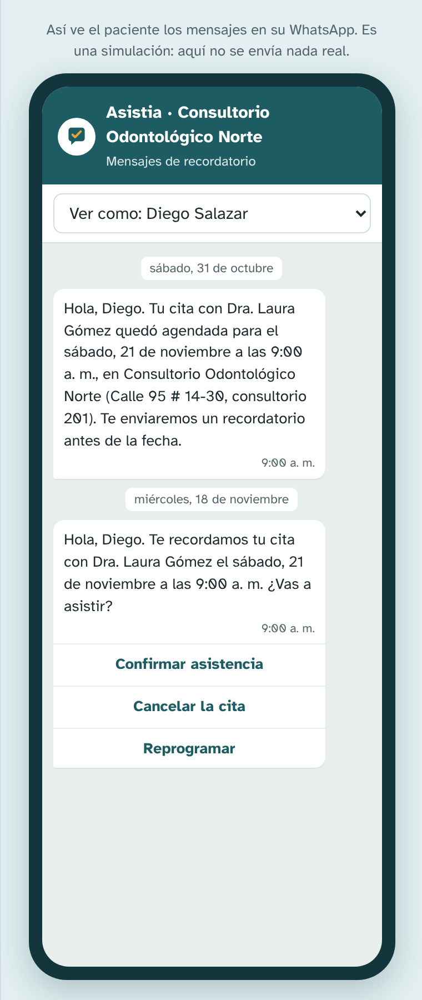
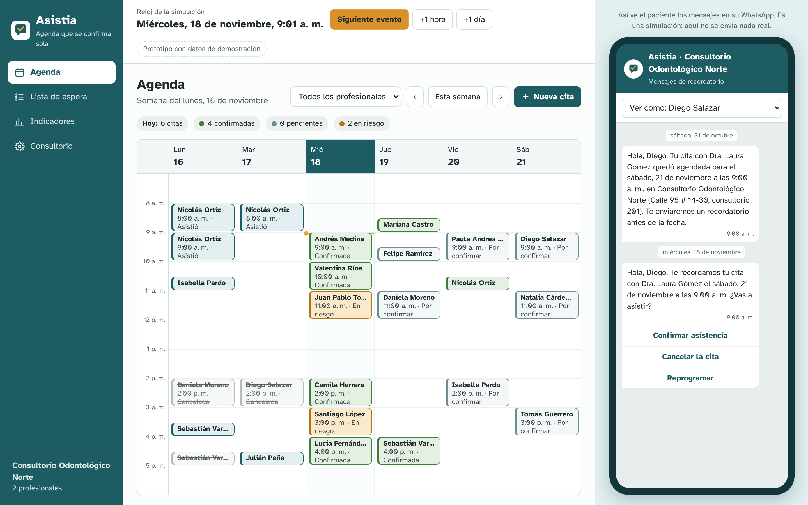
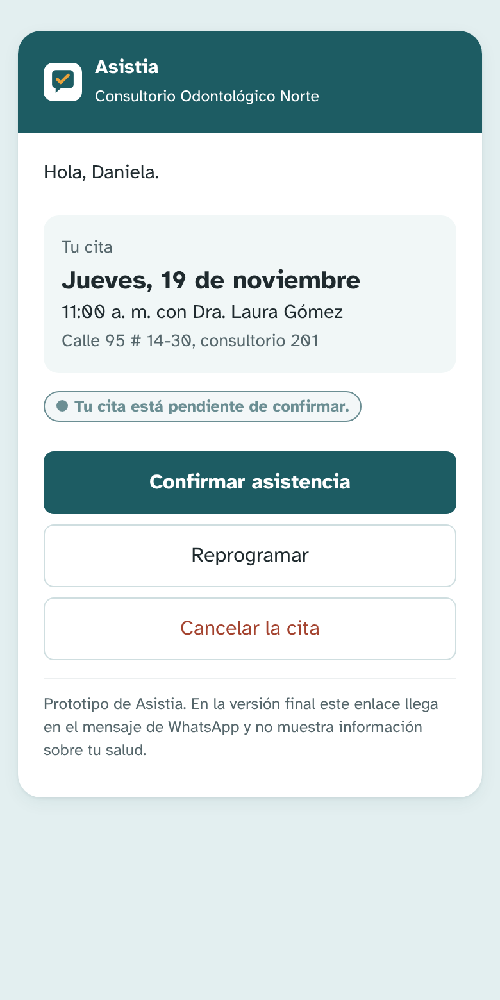

Asistia · Emprendimiento de Base Tecnológica. Usa las flechas del teclado o desplázate para ver las 10 diapositivas.
Recordatorios por WhatsApp, respuesta con un toque y cupos que vuelven a llenarse.

1de las citas médicas asignadas en Colombia se pierden porque el paciente no llega y no avisa.
Pasa mientras conseguir una cita es cada vez más difícil: en un año hubo 322 reclamos por cada 10.000 afiliados, y la demora en las citas es uno de los motivos principales.
| Recordatorio automático | Reasigna el cupo cancelado | Sin cambiar el software clínico | Mide lo recuperado | |
|---|---|---|---|---|
| Llamadas manuales | No | No | Sí | No |
| WhatsApp personal | No | A mano | Sí | No |
| Software clínico con agenda | Sí | No lo anuncia | Lo reemplaza | Reportes generales |
| Asistia | Sí | Automático | Sí | Sí |
Odontología, psicología, fisioterapia, nutrición y medicina general con consulta particular o prepagada. Primer segmento: los que hoy agendan por WhatsApp en Bogotá.
Centros de 1 a 10 profesionales con personal administrativo a cargo de la agenda. Más citas por mes, ahorro más visible.


menandes.github.io/asistia 6Un consultorio con 320 citas al mes que reduce un tercio su inasistencia recupera unas 16 citas, cerca de $1.440.000, frente a una suscripción de $69.000. Costos: nube con pago por uso y mensajes de WhatsApp de fracciones de centavo de dólar.
Prueba el prototipo:
menandes.github.io/asistia
Buscamos consultorios que quieran participar en el piloto.